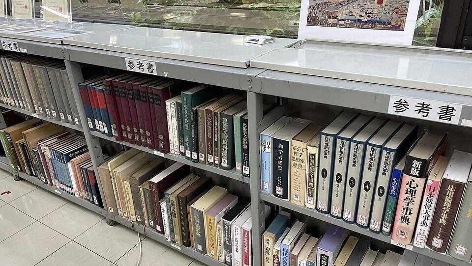

Orhan Pamuk'un Utrillo etkisi: resimden İstanbul yazarlığına

Görsel: Reference books in Sanko Library 1 · Eugene Ormandy · CC BY-SA 4.0 · Wikimedia Commons
Orhan Pamuk'un 2026'da yayımlanan Kelimeler ve Resimler kitabı, yazarın gençlik yıllarında Fransız ressam Maurice Utrillo'dan nasıl etkilendiğini anlattığı bölümle yeniden gündeme geldi. Sanatatak'ın 14 Eylül 2026 tarihli yazısı bu bölümü öne çıkarınca Pamuk ile Utrillo adları birlikte aranmaya başladı.
Orhan Pamuk Utrillo etkisini nerede anlatıyor?
Kaynak, Yapı Kredi Yayınları'nın bastığı Kelimeler ve Resimler – Seçme Hatıralar, Yazılar ve Bir Hikâye. Bianet'in haberine göre kitap 4 Haziran 2026'da raflara çıktı; Sanatatak kitabın 344 sayfa olduğunu aktarıyor. Utrillo bahsi 188. sayfada geçiyor.
Sanatatak'ta Cem Erciyes'in aktardığına göre Pamuk, Utrillo'yu bugün unutulmuş, popülerliği azalmış bir ressam olarak tanımlıyor. Ressamın Paris'in ara sokaklarını resmetme biçiminden etkilenerek çok sayıda İstanbul manzarası yaptığını yazıyor.
Kitabın içinde bu bölümün yanı sıra askerlik ve ilk yayıncılık yılları, Ara Güler, Umberto Eco, Paul Auster ve Anselm Kiefer'le dostluklar yer alıyor. Bianet'in tanıtımına göre Pamuk'un kendi arşivinden daha önce yayımlanmamış fotoğraflar ve çizimler de kitapta bulunuyor.
Maurice Utrillo kimdi, neden İstanbul'la birlikte anılıyor?
Utrillo 1883'te Paris'in Montmartre semtinde doğdu, 1955'te Dax'ta öldü. Annesi ressam ve model Suzanne Valadon'du. 1904'te resme başladı ve doğduğu semtin sokaklarını, duvarlarını, kilise cephelerini tekrar tekrar resmetti. 1928'de Légion d'honneur nişanı aldı.
Pamuk'un ilgisini çeken şey, bu dar sokak manzaralarının sıradanlığı. Kendi anlatımına göre resim yapma hevesi azaldığında, biriktirdiği İstanbul manzaraları onu İstanbul sokaklarının yazarı olmaya hazırlamıştı.
Utrillo ömrünün büyük bölümünde aynı dar alana baktı; geç döneminde manzaraları pencereden, kartpostallardan ve hafızadan çalıştığı aktarılıyor. Tek bir semtin tekrarına dayanan bu üretim biçimi, Pamuk'un İstanbul'a dönüp duran ilgisiyle örtüşüyor.
Pamuk resim ile edebiyat ilişkisini nasıl kuruyor?
The Art Newspaper Türkiye'den Elif Tanrıyar'a 12 Eylül 2025'te Büyükada'da verdiği söyleşide Pamuk, yazarlığın hesaplı, resmin ise bedensel bir iş olduğunu anlatmıştı. Yazarın kafasındaki resimleri kelimelere, okurun ise o kelimeleri yeniden resme çevirdiğini söylüyor.
Aynı söyleşide Utrillo'yu Camille Pissarro ile birlikte anıyor ve o yıllarda İstanbul'da bu ressamların işlerini görmenin güç olduğunu belirtiyor. Sanatatak'ın aktardığı kitap bölümünde ise Pissarro adı geçmiyor; iki metin aynı etkiyi farklı genişlikte anlatıyor.
Pamuk kendini görsel bir romancı olarak tanımlıyor; sahneyi önce görüntü olarak kurup sonra kelimeye çevirdiğini söylüyor. Defter çizimlerini derlediği Uzak Dağlar ve Hatıralar da bu alışkanlığın izini taşıyor.
Utrillo etkisi konusunda bilinenler ve henüz bilinmeyenler
Bilinen: etkinin kaynağı, kitaptaki sayfa ve Pamuk'un kurduğu bağ. Bilinmeyen: söz konusu İstanbul resimlerinin kaç tane olduğu, nerede tutulduğu ve sergilenip sergilenmeyeceği kaynaklarda yer almıyor.
Pamuk'un Şeylerin Tesellisi sergisi Dresden, Münih ve Prag'da gösterildi. Utrillo etkisiyle yapılan resimlerin bu sergiye dahil olup olmadığı ise henüz açıklanmadı.
Kitabın Utrillo bölümünün ne kadar yer tuttuğu da kaynaklarda belirtilmiyor. Sanatatak'ın yazısı bölümü tek bir sayfaya işaret ederek aktarıyor; metnin tamamı kitapta okunabiliyor.
“Resim, zihinle değil, gövdeyle yapılır.”
— The Art Newspaper Türkiye, 19 Eylül 2026
Takip etmek için
- Yapı Kredi Yayınları'nın Kelimeler ve Resimler kitap sayfası
- Sanatatak'ın Kitap bölümü; Cem Erciyes'in 14 Eylül 2026 tarihli yazısı
- Şeylerin Tesellisi sergisinin gezdiği kurumların duyuruları (Dresden, Münih, Prag)
Sık sorulan sorular
Orhan Pamuk Utrillo'dan ne aldı?
Paris'in ara sokaklarını resmetme yaklaşımını. Pamuk bu etkiyle çok sayıda İstanbul manzarası yaptığını, resim yapma heyecanını yitirdiğinde de bu manzaraların onu İstanbul sokaklarının yazarı olmaya hazırladığını yazıyor.
Bu anlatı hangi kitapta yer alıyor?
Yapı Kredi Yayınları'ndan çıkan Kelimeler ve Resimler'de, 188. sayfada. Bianet'in haberine göre kitap 4 Haziran 2026'da yayımlandı; Sanatatak 344 sayfa olduğunu aktarıyor.
Utrillo'nun resimleri Türkiye'de görülebiliyor mu?
Kaynaklarda Türkiye'de güncel bir Utrillo sergisinden söz edilmiyor. Pamuk da gençliğinde bu ressamların işlerini İstanbul'da görmenin zor olduğunu anlatıyor.
Olgular şu yayıncıların haberlerinden derlendi: Sanatatak, The Art Newspaper Türkiye, bianet, 10Haber. Metnin tamamı TrendSaphiens tarafından yazıldı; kaynaklarla kelime örtüşmesi %0.0 (eşik %5). Kaynaklarda olmayan bilgi eklenmedi.